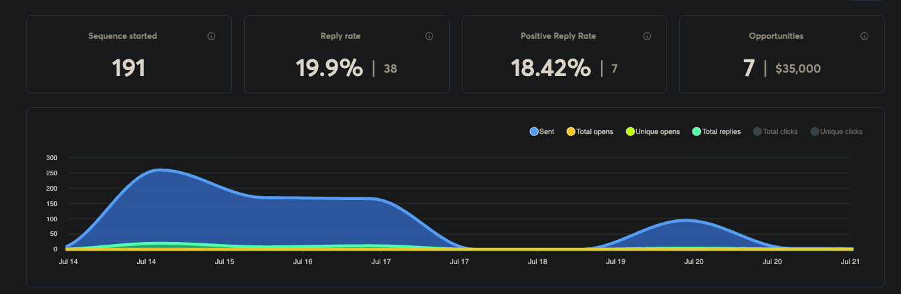

The campaign

About the client
Regent Peak Wealth Advisors is a registered independent advisory firm based in Atlanta, Georgia. The firm serves creators of significant wealth: business owners, entrepreneurs, corporate executives, multi-generational families, trustees, and board directors.
Their positioning is clear: independent advice, objective guidance, and support for people navigating meaningful financial complexity. In a market this trust-sensitive, most outreach fails the moment it drifts broader than the firm's real fit.
The objective
Open conversations with the exact kind of people Regent Peak is already positioned to advise. Not broadening the offer. Not changing the client. Not manufacturing demand.
What we did
Anchor to the firm's true positioning
We started with what Regent Peak already communicates clearly: an independent advisory model, objective advice, and high-touch guidance for complexity-heavy clients. That set the standard every prospect had to meet.
Source through the existing client lens
People were evaluated on whether they looked like someone Regent Peak would reasonably advise: meaningful financial complexity, real decision-making authority, and the life stage where independent advisory conversations are appropriate.
Filter for fit, not just affluence
"Wealthy" is too broad and usually too shallow. The focus stayed on people whose circumstances made Regent Peak a reasonable fit: those who value discretion, independent advice, and long-term strategic guidance.
Keep outreach proportionate to the trust involved
Measured, credible, and matched to the level of the recipient. Selective rather than broad, because that is what this relationship demands.
The outcome
- 6 qualified introductions opened in the first 45 days
- Every introduction matched the firm's existing ideal client profile
- Positioning integrity preserved: the outreach felt like the firm sounds
When the room is closed, alignment opens it.